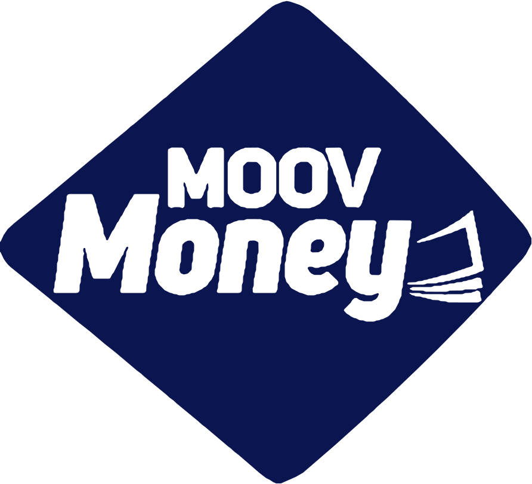

À propos
Né à Abidjan. Conçu pour ce qui vient ensuite.
MAIORIS tient son nom du latin maior, qui signifie plus grand, au-delà. Le cabinet existe pour apporter aux organisations africaines l'intelligence stratégique et créative qu'exige une croissance ambitieuse.
Vision
Une référence du leadership créatif stratégique en Afrique.
Nous voulons que les organisations africaines traitent la créativité comme un actif stratégique : décidé, structuré et mesuré, au niveau des meilleurs cabinets internationaux.
Philosophie
L'intelligence précède l'exécution.
La stratégie précède la production. Les systèmes rendent la performance reproductible. Nous préférons lever la contrainte qu'ajouter du bruit.
Positionnement
En amont des décisions.
MAIORIS n'est ni une agence de communication, ni un studio graphique, ni une agence digitale généraliste, ni une société de production. Le cabinet intervient à l'intersection de la stratégie, de l'intelligence créative, du leadership, de la technologie, de l'IA et de la performance organisationnelle.
Le cabinet s'appuie sur un réseau de partenaires de confiance pour la production, les données et la technologie, sous la direction de MAIORIS.
Direction
Marko Leo
Fondateur · Creative Strategist & Creative Director
Marko Leo a fondé MAIORIS après neuf ans à diriger le travail créatif à Abidjan, comme creative strategist et directeur de la création. Il a construit des territoires de marque, dirigé des équipes créatives et réorganisé la production créative autour de priorités et de méthodes mesurables.
Dans ses fonctions précédentes, il a travaillé sur des marques comme TCL, Moov (Côte d'Ivoire et Togo), OLA Energy, SanlamAllianz et l'ANSUT. Il est l'auteur de la méthode devenue MAIORIS CPS.
Marko Leo est le nom professionnel de Noé Karamoko.
9ans
d'expérience en leadership créatif
15+marques
accompagnées au fil du parcours
3marchés
Côte d'Ivoire · Togo · Mali
6leviers
de Creative Leadership intégrés à notre approche
MAIORIS GROUP · CREATIVE LEADERSHIP FOR BUSINESS PERFORMANCE.
Ils nous ont fait confiance.
 Côte d'Ivoire & Togo
Côte d'Ivoire & Togo


 Côte d'Ivoire
Côte d'Ivoire
Ambition régionale
Africain par son origine. Sans limite géographique.
Côte d'Ivoire → Afrique de l'Ouest → Afrique → International
Conversation stratégique
Parlons de là où vous voulez aller.